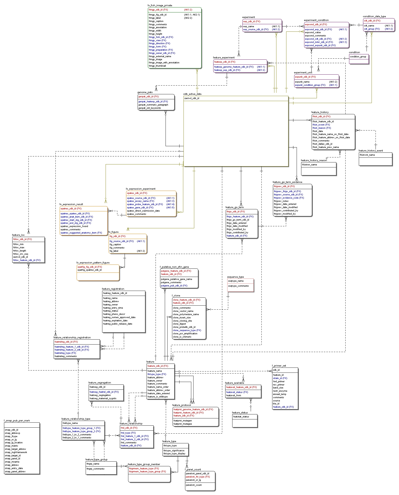

ZFIN Documentation:
Database Design
This documentation is preserved for historical purposes, and NOT updated. Updated documentation is found here: http://almost.zfin.org/doc
$Id: db.html,v 1.75 2005-07-19 23:15:36 peirans Exp $
This document is one of several that describe the Zebrafish Information Network, or ZFIN. This document focuses on the logical database design.
This is the only document in that set that is accessible to the public over the web. However, this document does contain some pointers into the other documents. If you are accessing this document through ZFIN's public web interface then these links will lead you to a page explaining that the requested document is not available to the public. For example, the following paragraph contains 2 links into documents that only accessible within ZFIN.
For information on the physical database design see the Physical Design section of the Database Administration document. For details on database implementation at ZFIN (such as tools and locally written scripts) see the Database Implementation section of the Implementation and Development document.
Table of Contents
- History
- Logical Design Conventions
- Database Schema
- Database Areas
- Database Cleaning and Validation
- Database Functions
History
None of the members of the ZFIN team that wrote the document you are reading were with ZFIN when the database was first designed. Therefore, the version of events recorded here may not be that accurate.
An initial data model was drawn up in 1997 by Eck Doerry, Ted Kirkpatrick, Sarah Douglas, and Monte Westerfield. This document is available in the ZFIN web site at
This document is well worth reading. It describes the vision that guided the initial implementation of ZFIN. However, it describes an ideal that was never achieved for a number of reasons. It uses object-relational terminology to describe the data model. Unfortunately, the object-relational technology that was available at the time fell short of the terminology. Also, when ZFIN was first implemented, connecting a database to the web was bleeding edge work. Just getting it to work took an extraordinary amount of effort. As a result, the bulk of development time was spent on the user interface and on getting the web to database connection to work at all. The database implementation became a low priority. Finally, the database is also not running under the database management system for which it was first implemented. ZFIN originally used Illustra. However, Illustra was purchased by Informix, and ZFIN migrated to Informix in early 2000. Some things that made sense under Illustra, no longer make sense under Informix.
The result was a database that successfully backed the ZFIN site, but that bears only a limited resemblance to the design described in the original data model document.
The database has a number of problems that ZFIN is actively addressing:
- Redundant data
- Incorrect implementation of one-to-many and many-to-many relationships
- Lack of foreign key and primary key enforcement
- Poor implementation of specialization-generalization hierarchies
Starting in 2001/06 we created this document to describe what was actually in production. From then until 2004/01 this document contained general database design information (such as this History section), as well as ER diagrams of database tables, and text descriptions of each table and their columns. The ER diagrams and table and column descriptions were all manually generated.
In 2004/01, we removed the ER diagrams and table and column descriptions from this document, and replaced them with a pointer to documentation that is automatically by generated by the ER/Studio database design tool.
Logical Design Conventions
This section describes the guiding principles used at ZFIN to design and implement our database. This section is domain neutral. For a description of how we map different biological areas to the database see the Database Schema and Database Areas sections.
Many parts of this discussion include ZFIN standards. ZFIN standards are shown in a different font and color. Most ZFIN standards are described in the Standards and Best Practices document. However, we thought that this document was the best place to put our database related standards.
ZDB IDs and ZDB Object Types
The central identifier in ZFIN is a ZDB ID. A ZDB ID is guaranteed to uniquely identify an object within ZFIN. ZDB IDs are character fields that have the following form:
where
| ZDB- | Every ZDB ID start with these 4 characters. |
| objtype | This is the ZDB object type of the record. This is a short character string that indicates the type of record, e.g, "GENE", "PUB". |
| yymmdd | The year, month, and date the record was created in ZFIN. |
| n | Arbitrary number of digits uniquely identifying the record. This value is incremented each time an ID for a given record type is specified. It is reset to 1 each day. |
New ZDB IDs are generated by the get_id() ZFIN SQL function. get_id() is passed a ZDB object type as a parameter and it returns the next available ZDB ID for that object type. They are implemented in the database as VARCHAR(50). None of the existing values comes close to being that long.
Two other functions are also useful with ZDB IDs
- get_obj_name() returns the name of an object given its ZDB ID.
- get_obj_type() returns the object type of an object given its ZDB ID.
Supported ZDB object types are defined in the ZDB_OBJECT_TYPE table.
Sources and Data
Broadly speaking, records with ZDB IDs (and therefore ZDB object types as well) can be broken into two general categories: Sources and Data.
Sources
Sources are what data come from. Sources are either publications, people, labs, or companies. The ZDB IDs of all sources are stored in the ZDB_ACTIVE_SOURCE table.
See the Sources and Attribution section for details.
Data
Data is information taht describes genetic or experimental data. This is pretty much every type of record in the database that is not a source. The ZDB IDs of most object types are stored in the ZDB_ACTIVE_DATA table.
ZDB_ACTIVE_SOURCE and ZDB_ACTIVE_DATA
If you look at the database schema you will see an enormous number of foreign key relationships pointing back to the ZDB_ACTIVE_DATA table, and to a lesser extent to the ZDB_ACTIVE_SOURCE table.
These tables store the ZDB IDs of almost every active source or data item in ZFIN. These tables were added to ZFIN in 2001 to give us better support for generic tables. Without these tables it would not be possible to have foreign key constraints on generic tables. See the Generic Tables section for details.
We did consider and reject two other options for achieving this same end.
We could have used Informix table inheritance features. Then the data tables (e.g. MARKER, LOCUS, etc.) would inherit from ZDB_ACTIVE_DATA and ZDB_ACTIVE_SOURCE. We decided not to pursue this option because of portability issues. However, that decision might be worth reconsidering at some point.
We could have used triggers instead of foreign key constraints to enforce foreign key relationships. This would work but using triggers instead of foreign key constraints so obscures the relationships in the database that we decided not to to go this route either.
ZDB ID History
ZFIN has a mechanism for tracking data ZDB IDs that have been replaced by other ZDB IDs and then deleted from the database. See the ZDB_REPLACED_DATA table for details.
Tables and Columns
This sections describes general ZFIN guidelines for defining tables and columns. See also Naming Conventions and Constraints.
Generic Tables
ZFIN favors design approaches that use fewer general purpose tables over those that use many specific tables.
What does that mean exactly? Lets use the topic of aliases, previous names, and synonyms (hereafter refrered to as just aliases) as an example.
Practically everything in ZFIN can have aliases: markers, loci, GO terms, orthologues, and so on. Originally, we had an alias table for each different type of marker. That is, the MARKER table had a MARKER_ALIAS table hung off it, the LOCUS table had a LOCUS_ALIAS table hung off of it, and so on. All of these alias tables had identical or nearly identical structures. They contained the ZDB ID of the object the alias was for, and the alias.
The "alias table per object type" approach had some advantages. In particular made, it was explicit in the database design what object types had aliases. This approach had several disadavantages. First it led to a proliferation of tables, all with the same structure. Secondly, and more importantly, it made it difficult to make system-wide changes to how aliases are treated. For example, we couldn't have one routine that displayed an alias list in one format, no matter what the object type. If we decided we wanted to add classes of aliases and say some are more important than others, we would have to modify many tables and lots of code.
To address these issues we added the DATA_ALIAS table, moved all the data from the object-specific alias tables into it, and then dropped the object-specific alias tables. We now store and treat aliases in a uniform way, resulting in cleaner code and a more flexible database. The downside is it is no longer obvious from the database design what objects have aliases. The ZDB ID column in DATA_ALIAS points at ZDB_ACTIVE_DATA.
Attributions make an even stronger case for general purpose tables. Currently, all attributions are stored in two tables, RECORD_ATTRIBUTION and COLUMN_ATTRIBUTION. If the code needs to know what objects are referencing a particular publication, it only has to query those two tables. If attribution were distributed across many object-specific attribution tables, then such code becomes much more awkward and much higher maintenance.
Data Types
It is generally obvious what the data type of a column should be. This section discusses a few cases where the choice is not so obvious.
VARCHAR and CHAR
ZFIN has a general policy that character data less than 255 characters long is stored in VARCHAR columns rather than CHAR columns.
LVARCHAR, CLOB, and HTML
The LVARCHAR, CLOB, and HTML datatypes can all be used to store character data that is longer than the VARCHAR max of 255 characters. LVARCHAR can store up to 32KB characters (depending on how big other columns are in the table). HTML and CLOB can store character data of arbitrary size.
Whenever possible, store large character data in LVARCHAR columns. LVARCHAR is a first class string datatype in Informix. You can treat LVARCHAR columns just like VARCHAR columns in your code. In addition to simple syntax, this also gives you access to the full set of Informix string functions.
HTML and CLOB columns both require significantly more work. In fact, in January of 2005, ZFIN decided to move publication.pub_file(blob), fish_image.fimg_image(blob), fimg_image.fimg_image_with_annotation(blob), and fish_image.fimg_thumbnail(blob) all out of the databases and into the filesystem. Loading these large objects from the web proved to be unreliable and error-prone. We are not sure what part of this process actually caused the errors. It could have been the network (problems seemed to occur more frequently in the morning), the platform (seemed to occur more frequently on Macs then on PCs), the informix routine used to generate the large object, the perl scripts used to make the thumbnails, or many other factors. After the move, loading from the web has been successful.
In general, if a blob is going to be loaded from the web, it would be a good idea to consider storing the actual file in a directory in the filesytem with a pointer in the database to the file.
Redundant Data
There are three kinds of redundant data at ZFIN, all of them discussed below.
Derived Data
Dervied data exists in ZFIN in several places. It is derived by processing base data. In theory, when the base data changes the derived data should also change. How long it takes the derived data to actually change depends on the situation.
Derived data always exists to make the web site faster.
Derived Columns
Derived columns are columns in tables that are populated by insert and update triggers on the same table the derived column is in. Therefore, derived columns are always current with the base data they are derived from.
Derived columns can contain almost any type of data. However, there are a few types of derived column that occur throughout the database:
| _lower columns | Lower columns contain the contents of another column in the row, with the value shifted to all lower case. |
| _order columns | Order columns are used to order output results. Order columns that contain character data are usually the result of calling the zero_pad() function on another column in the row. |
Fast Search Tables
Fast search tables are derived tables that are used to greatly speed up the ZFIN web site. The contents of fast search tables are the result of processing data from multiple tables and merging it in complex ways. They are created because it is too slow to do this processing on the fly.
Fast search tables are generated by the ZFIN regen functions. Some regen functions are run on demand. A few regen functions are called every time a base table is updated and do incremental updates to fast search tables. All fast search tables are regenerated every night. Therefore, the age of data in fast search tables can range from current (usually) to up to 24 hours old (rarely). See the Regen Functions section for details.
Redundant Attributions
Because of ZFIN's use of generic tables we occassionally have a situation where the best compromise is to duplicate data in both an attribution table, and in a base table. This happens whenever the attribution is itself part of the identity of the record.
This type of redundancy can occur with any generic table, whenever the item stored in the generic table, such as an alias, is part of the identity of the record in the base table.
This redundancy is managed with triggers. See the When Not to Use a Foreign Key section for the other alternatives we considered.
Legacy Redundant Data
ZFIN also has redundant data in some tables that date back to early days of ZFIN (1999 and before). Most of this redudant data resides in the Fish / Mutants tables, but some also exists in the Sources and Attribution tables. We hope to get rid of most of these redundant columns in 2005.
Private Data
The ZFIN database has no private data in it. By definition, if data is in the database then it can be shown to anyone via the web site.
Views
Views at ZFIN are an under-represented minority for no other reason than we have not yet found significant use for them. We encourage their use whenever necessary.
Currently, there are 3 views in the database (the Figure_Gene_View has
the proper naming conventions for any new views created at ZFIN.
[Data_Description]_View.):
vGroupSize
vMrkrGoevSameSize
Figure_Gene_View
vGroupSize and vMrkrGoevSameSize were put in production to support a nightly validatedata.pl check (mrkrgoevInfgrpDuplicatesFound check). This check was requried to maintain a normalized schema for marker-go-term-evidence inference data and to support the way we insert this data via the interface.
The statement in validatedata.pl checks for duplicate marker_Go_term_evidence records that have duplicate inference_group_members.
There are 2 parts to this query. The inner subquery uses 2 copies of the marker_go_term_evidence table to find all the mrkrgoev records that have identical mrkr, go_term, source, and evidence_code (we can't put an AK on this table and still avoid a join table between inference_group_member and mrkrgoev--in May 2004 we decided to remove the join table that did this--called inference_group).
The outer query relies on 2 views that exist in the db: vMrkrGoevSameSize, and vGroupSize
vGroupSize gives us the number of inference_group_members for each mrkrgoev_zdb_id.
vMrkrGoevSameSize holds pairs of mrkrgoev_zdb_ids who have same size inference_groups.
We test for equality by doing a self-join on the inference_group_members of mrkrgoev_zdb_ids with same size inference_groups. If one set can be mapped onto another with no inference_group_members left over, then the 2 sets are equal.
If a record exists both in the subquery--duplicates in marker_go_term_Evidence and in the outer query, duplicates in inference_group_members...then this query will return the duplicate pairs of mrkrgoev_zdb_ids to Doug and Informix.
Naming Conventions
This section defines the database naming conventions used at ZFIN. ZFIN was originally implemented with very few naming conventions for tables and columns. Since 2000, we have been using naming conventions with any new work we do, and applying them to existing areas as we modify them. However, many of the older tables still do not conform to these standards.
Table Names
We have a few standards for naming tables.
-
Use whole words.
This leads to clearly understandable, if long, table names. The place for brevity can be in column names.
-
Use singular table names.
Except in the case of fast search tables (see below), use singular table names. That is, MARKER is better than MARKERS.
-
Intersection tables.
Intersection tables implement many to many relationships between other tables. There are two standards for these, and old one and a new one. The old standard is to name the table
INT_tablename1_tablename2The new standard is to just name ittablename1_tablename2 -
There are two naming conventions that are often used with fast search tables. First, they have the prefix ALL_. Second, fast search tables often have plural names, such as ALL_MAP_NAMES. Both of these highlight that the table is a fast search table.
- Related tables can have similar names.
It is acceptable (maybe encouraged) for related tables to have similar names. For example, the FISH_IMAGE_VIEW, FISH_IMAGE_DIRECTION, FISH_IMAGE_FORM, and FISH_IMAGE_PREPARATION tables are all contolled vocabulary tables that constrain columns in the FISH_IMAGE table.
View Names
The proper naming conventions for any new views created at ZFIN are as
follows:
[Data_Description]_View
The figure_gene_view is a good example of this convention. It describes a join between the figure table and the genes used in expression records.
Column Names
Our column naming conventions can be divided into two camps. There is the one true omnipresent and omnipotent naming convention that must be followed in all cases forever, and then there is everything else. The big kahuna is listed first.
- Every table has a unique prefix that occurs at the front of every column name in that table.
Each existing and new table is assigned a unique 1 to 10 character prefix that every column in that table starts with. This includes foreign key columns (see below). This allows us to uniquely identify each column in the database given just its name. It becomes much easier to find all places where a column is used. Columns that already exist will keep their existing names until we can get back to them.
ZDB ID Columns.
Any column that contains a ZDB ID, ends in "_ZDB_ID".Foreign Key Columns.
Foreign key columns, like every other column, must start with the table prefix. After the prefix, unless you can think of a better name, a good default is to append the name of the foreign key in its home table._ORDER Columns.
Any column with a name that ends in "_ORDER" specifies an order in which values from this table should be displayed. Such columns only exist when the table does not already contain a column that can be used for this purpose. Order columns can be integer or character. In the case of character order columns they are almost always populated by triggers with the zero_pad function. Values in order columns are ascending, e.g., records with low values are displayed before those with higher values.
_SIGNIFICANCE Columns
Significance columns have a distinct purpose from order columns. Significance columns specify how significant/reliable/important a particular record is relative to other records in the same table. Unlike order columns, two or more records can have the same significance value. Significance columns are often used to list output in decreasing order of significance. Values in significance columns are ascending, e.g., records with low values are more significant than records with high values.
Function Names
Regen Functions
Functions which generate fast search tables, known as Regen Functions, must be named regen_whatTheyRegen.
Other Database Names
The names of things like indexes, triggers, and constraints are physical details that you do not need to know to understand or use the database. Therefore, they are described elsewhere under Physical Design.
Constraints
ZFIN cares a great deal about data quality. We have a multilevel approach to this. Our very first line of defense are database constraints. If ZFIN can find a way to define a constraint in the database, we define it. Put another way, we push as many domain rules into database constraints as possible.
Some constraints are to complex or too costly to be enforced with Informix mechanisms. To check these constraints ZFIN runs additional validation scripts daily to flag any data that falls outside of those conditions.
Finally, ZFIN runs weekly and monthly scritps that report boundary conditions that often, but not always, indicate problems.
This remainder of this section describes constraints that can be enforced using Informix constraint and trigger mechanisms.
Primary Keys
We have a number of guidelines on primary keys.
- Every table must have a primary key.
- If a table has its own ZDB ID then the ZDB ID must be the primary key.
- Primary keys can be natural keys.
If a table has its own ZDB ID column, then that column should be the primary key column for that table. If it doesn't then a natural key can be used.
- Primary keys can be composite keys.
When to Give a Table Its Own ZDB ID
Some tables have their own ZDB ID column and some don't. How do we decide if a table should get its own ZDB ID or not?
If a web page will exist to display an individual record in the table, then that table should get its own ZDB ID. Put another way, if the identifying data for that record will occur in a URL at ZFIN, then it should have its own ZDB ID.
If the data in the table will use any of the general purpose tables then the table will need its own ZDB ID. The generic tables include the ZDB ID of the data record. Without that ZDB ID, you can't use the tables. Also see the When to Add a Foreign Key Referencing ZDB_ACTIVE_DATA section.
If a table's natural key includes more than 3 columns then it may be worthwhile to give the table its own ZDB ID just to make identifying records in the table less cumbersome. This situation often arises in long chains of tables where the natural key can eventually include 4 or 5 ZDB IDs from other tables.
However, there are tradeoffs, in swapping 4 or 5 foreign ZDB ID columns for your own. An advantage of having all those keys in every step along the way is that it is easy to join a record from any table in the chain with any other table in the chain. If you give every table in the chain its own ZDB ID, then you must join every table along the chain between the two tables of interest.
When to Add a Foreign Key Referencing ZDB_ACTIVE_DATA
Not every data table that has its own ZDB ID column has a foreign key relationship to ZDB_ACTIVE_DATA. Tables that don't have these relationships don't have their ZDB IDs in ZDB_ACTIVE_DATA.
You don't need to add a table's ZDB IDs to ZDB_ACITVE_DATA unless you need to place it in a column in another table that has a foreign key relationship to ZDB_ACTIVE_DATA. This often happens when you try to use the ZDB ID in one of the general purpose tables.
You are also free to add the constraint for other reasons as well.
Foreign Keys
Use foreign keys whenever possible, and always reference the most specific table possible.
Cascading Deletes
When you define a foreign key, you can specify if it uses cascading deletes or not. If a foreign key uses cascading deletes then the record containing the foreign key will be automatically deleted when the parent record (the record where the foreign key came from) is deleted. That is, when the parent record is deleted, that delete will cascade out to the child record.
If a foreign key does not use cascading deletes then deletes of a parent record will fail unless all child records are first deleted or the foreign key column in all the child records are changed to a different value (to point at a different parent record).
ZFIN has several rules of thumb for deciding when to use or not use cascading deletes.
- Controlled Vocabulary: If the foreign key points back to a controlled vocabulary table then it will not have an "on delete cascade" clause. If you are going to delete a controlled vocabulary term then you will have to go through the work of dealing with the records that use it before you can delete the term.
- Base Data (i.e., anything but controlled vocabulary): If the foreign key points back to a base data table (such as MARKER or PUBLICATION), or at ZDB_ACTIVE_SOURCE or ZDB_ACTIVE_DATA then the foreign key will have an "on delete cascade" defined for it. This means that you can delete a record from ZDB_ACTIVE_DATA or ZDB_ACTIVE_SOURCE and count on all references to that record being deleted from the database.
Note that tables that store large ontologies that change relatively often fall somewhere in between these groups. Are GO terms or the anatomical dictionary controlled vocabularies or base data? Deal with these situations on a case by case basis.
When Not to Use a Foreign Key
There are some cases where zealous use of foreign keys can cause unexpected results. For example, the alternate key in the MARKER_GO_TERM_EVIDENCE table includes the source ZDB ID. The source ZDB ID defines what publication (usually) the evidence was found in. We can't create a MARKER_GO_TERM_EVIDENCE record without a source; it is a fundamental part of what defines a MARKER_GO_TERM_EVIDENCE record.
However, we generally shy away from storing sources in base data tables. We prefer to store them in the RECORD_ATTRIBUTION and COLUMN_ATTRIBUTION tables. That way, we only have to look in 2 tables to find all the attributions to a particular publication.
There are at least 3 solutions to this situation, all of them with drawbacks:
Include the source in the base data table, but do not add a matching record to RECORD_ATTRIBUTION (or COLUMN_ATTRIBUTION). This means there is no redundant information in the database (the attribution is stored only in the base data table), but it now means we have to look in more that just the attribution tables to find out where a source is attributed.
Store the source only in RECORD_ATTRIBUTION (or COLUMN_ATTRIBUTION). Do not have a column for the source in the base data table. This means there is no redundant information in the database (the attribution is stored only in the attribution table), but it now means that part of what defines the record (the source) is no longer stored in the record.
Store the source in both the base data table and in RECORD_ATTRIBUTION (or COLUMN_ATTRIBUTION). This introduces redundant data into the database because the attribution is now stored in 2 places, but it means we only have to look in the attribution tables for attribution data, and that everything that defines the record is now stored in the record.
At ZFIN we started out using option 2, but eventually moved to option 3, having redundant data in the database.
What does this have to do with the zealous use of foreign keys? One way to control the redundancy in option 3 is to add a foreign key to the base data table (MARKER_GO_TERM_EVIDENCE in this example) that points at RECORD_ATTRIBUTION. This way, you can't have a MARKER_GO_TERM_EVIDENCE record unless you also have a matching RECORD_ATTRIBUTION record.
This solution deals with the redundancy effectively, but results in some counterintuitive behavior. First, you have to insert an attribution for the MARKER_GO_TERM_EVIDENCE record before you can insert the MARKER_GO_TERM_EVIDENCE record itself. If you don't do this then you will get a foreign key error when you try to insert the MARKER_GO_TERM_EVIDENCE record. This seems backwards.
Second, deleting a record from RECORD_ATTRIBUTION can now result in the deletion of a record from another table. This is bad because you would never intuitively expect that deleting an attribution would cause the thing that is attributed to also be deleted.
A better way to deal with the redundancy is to
- Add an insert trigger to MARKER_GO_TERM_EVIDENCE so that when a record is inserted there, a matching record is also inserted into RECORD_ATTRIBUTION.
- Add a nightly check to validatedata.pl to verify that all MARKER_GO_TERM_EVIDENCE records still have matching RECORD_ATTRIBUTION records.
So that is what we did.
Alternate Keys
If a table has columns that form alternate keys, then define unique constraints for those columns. We put a great deal of effort into identifying what the alternate keys are. Not having them properly defined leads to duplicate data in the database.
Not NULL Constraints
If a column cannot contain NULL values then define a not NULL constraint for the column. If a column can contain NULL values then a description of what a NULL value in that column means must be included in the schema documentation.
Check Constraints
In Informix, check constraints can be used to enforce conditions within the context of a row. If a domain rule can be enforced with a check constraint, the define a check constraint to enforce the rule.
Check Triggers
Some domain rules involve more than one row in a table, or rows in more than one table. These rules cannot be enforced with check constraints. We enforce them by:
- Defining database functions that check the conditions, and throw an exception if the conditions fail.
- Adding insert and delete triggers on the table that call the function that checks the conditions.
When records are inserted or updated in the table, the check trigger is fired, which invokes the database function that checks the condition. If the condition fails, the function throws an exception, which aborts the insert or update.
Triggers
ZFIN embraces three types of triggers:
Triggers that do minor data cleaning at insert and update time. For example, the scrub_char() function is called by many triggers to remove leading and trailing spaces (and several other things) before the data is added to the database. Scrubbing triggers exist on all columns that can be populated through user/curator input. In addition, we run a script every night, scrubscan.pl, to check all (almost) character columns in the database to see if they need to be scrubbed.
Triggers that populate derived data, either in derived columns in the same table, or in derived tables.
Triggers that check complex conditions and abort the insert or delete if the condition fails. See the Check Triggers section for more.
We shy away from and are ambivalent about triggers that cause any other type of action, such as inserting, updating or deleting data in the same or other tables.
Why? These triggers constantly surprise you. They are oh so easy to forget, and even when you remember them, you have to find the definition of the trigger, and then maybe a procedure as well.
ZFIN, however, does have a few situations where we use this type of trigger simply because it was the best way to do something. Specifically, the marker_go_term and marker_go_term_evidence tables have these triggers.
Database Schema
To see Entity-Relationship (ER) diagrams, and descriptions of the table and columns in the ZFIN database, see
This schema documentation is far from complete. Some tables have no verbal description, and many tables have only minimal comments. This documentation is a work in progress at ZFIN.
A note to Apple users: As of 2004/01, ER/Studio generated documentation is not readable by Safari 1.1.1 or Internet Explorer 5.2.3 running on Macs. It does work with the Camino browser, however. ER/Studio uses some fairly thorny JavaScript to do navigation, and this does not currently run under Safari or IE browsers on Macs.
The schema documentation is created using a database design tool ER/Studio. The tool does not yet support all of our database documentation needs. As a result the database documentation is split between the tool generated schema documentation, and this document. In particular, the schema documentation does not contain a verbal description of the database areas or database functions. These things are all documented in this document.
Each table is assigned a prefix, one or more areas, and a function. Functions comes from this set:
- Base Data: Table contains data about zebrafish or the zebrafish community. Most of what is entered by users or curators qualifies as base data.
- Controlled Vocabulary: These tables are used within ZFIN to limit the values that can occur in columns to a small set of values. They are used to populate pull down menus as well. These tables are always referenced in foreign key clauses of other tables.
- Infrastructure: Table is used to manage or run the web site.
- Fast Search: See the Fast Search Tables section.
- App Page Specific: All app page specific tables should be replaced with temporary tables.
- View:
Table is not actually a table, but is a view. A view is a virtual
table that is actually the result of a dynamically executed
SQL query on other tables.
Database Areas
This section contains verbal descriptions of the database areas described in the Schema documentation.
The tables in the database are divided up into several logical areas, each focusing on a different type of data. Note that these areas are not disjoint. There are links into and out of each area from other areas. This means that some tables are shown in several different areas.
Each area has a diagram in the schema documentation showing all of the tables in that area. Verbal descriptions of the tables can also be found in the schema documentation.
Anatomical Dictionary
These tables describe ZFIN's anatomical dictionary. The anatomical dictionary was implemented at the same time as expression.
This work went into production on 2001/10/01.
Expression
These tables describe gene expression in ZFIN. Expression was implemented at the same time as the anatomical dictionary.
This work went into production on 2001/10/01.
Fish / Mutants
The tables related to mutants are in dire need of a redesign. INT_FISH_CHROMO, along with the CHROMOSOME table, were a first and unsuccessful effort by ZFIN to support double mutants. We didn't end up supporting double mutants, and we badly muddled the implementation of single mutants in the process.
The intent of this table was to implement a M:M relationship between the FISH and CHROMOSOME tables. This relationship would support double, triple, etc., mutants. This table could in fact support such a thing.
However, because the CHROMOSOME and FISH tables have so much redundant data in them, they effectively render this whole effort useless. What we end up with instead is the FISH table supporting only single mutants, and a 4 table cycle with 1:1 relationships all the way around.
FISH has a 1:1 relationship with INT_FISH_CHROMO which has a 1:1 relationship with CHROMOSOME which has a 1:1 relationship with ALTERATION which has a 1:1 relationship with FISH, which is where we started. In this box step, INT_FISH_CHROMO contains no useful information, and CHROMOSOME contains only one useful field.
ZFIN plans to clean this up in 2005.
New Fish Model
The new fish model is in development. It is based on the GMOD sequence
and genetic modules.

Fish Images
Fish images are a subarea of Fish / Mutants, and are related to the Anatomical Dictionary and Expression areas.
This work went into production on 2001/10/01.
ZIRC
This is a subarea of Fish / Mutants. It contains the tables that describe the availability of various fish and mutations at ZIRC. ZIRC's database better represents double, triple, etc. mutants better than ZFIN. Therefore, ZIRC availability information is stored in ZFIN by relating ZIRC fish lines to ZFIN alterations, rather than directly to ZFIN FISH records.
Infrastructure
Tables in this area are used to support the database or web site in general ways.
Mapping and Linkages
These tables contain information about mapping experiments.
The linkage tables are used to represent independent linkages in ZFIN. An independent linkage is basically a mapping experiment result that was not done on a panel. Therefore it can't go in the standard mapping tables.
An independent linkage says that this set of markers occur close to each other. The basic information about linkages and the markers in them are in the LINKAGE and LINKAGE_MEMBER tables. There may also be additional information distances between particular markers in the linkage. This information is represented in the LINKAGE_PAIR and LINKAGE_PAIR_MEMBER tables.
Linkages were reimplemented in production on 2001/07/18.
Markers and Genes
This large set of tables describes genes and markers in ZFIN, as well as related information.
Gene Ontology (GO)
Gene ontology (GO) (www.geneontology.org) is a large project that attempts to " provide controlled vocabularies for the description of the molecular function, biological process and cellular component of gene products."
ZFIN implements only a fraction of GO. In particular any GO terms that are associated by SWISS-PROT with ZFIN gene records are included in ZFIN. ZFIN does not store the full GO hierarchies (directed acyclic graphs actually), only the terms that are relevant to zebrafish and which of the three GO ontologies the term is a part of.
Orthologues and DB Links
These tables store orthology information in ZFIN. It is a subarea of the Markers and Genes area.
Sources and Attribution
Sources refer to things that can be sources of data. This includes publications, people, labs, and companies.
Curator Database
This subarea of Sources and Attribution describes the tables that ZFIN uses to keep track of what has been curated in what publications so far.
Unclassified
Tables in this area have not yet been classified into one of the other areas yet.
Database Cleaning and Validation
Whenever possible we try to enforce constraints in the database, using the database management system. In addition ZFIN also uses triggers to do some data cleaning at insert and update time. See the Constraints and Triggers sections for details.
Finally, there are some conditions that can't be easily checked with check triggers or standard constraints. ZFIN runs a script every night, validatedata.pl, that reports any violations of this type of constraint. In addition, it also does some cleanup for a limited number of conditions. The same script is run (with different options) to generate weekly and monthly reports of conditions that sometimes, but not always require curator attention.
Verifying Blobs in the filesystem
In 2005, ZFIN decided to move image and pdf BLOB files out of the database and into the filesystem. The /loadUp/ directories on helix and embryonix hold these files.
Every night, via zfishweb cron, the filesystem repository of images/pdfs is compared to (and validates) database references to these files. Zfishweb cron fires remove_orphan_files.pl (which calls rsync.pl).
Image files can be referenced in two different tables:
fx_fish_image_private
fish_image
PDF files are references in the publication table.
If files are incountered in the filesystem that do not have any references in the database, then these files are moved to the /bkup directory available in each loadUp subdirectory and a report is sent listing all the files that moved. This can happen when a curator deletes an image from an FX record. The interface is not allowed to delete or move files in the filesystem for security reasons.
If the script incounters file references in the database that are not in the filesystem, it generates and sends a report to informix. This is a sign of something very wrong with the upload cgi. In the early days, this happened because curators were able to load 'null' image records into the database. Null image records were image records with no actual image. These have almost all been corrected and we should NEVER receive emails listing file references in the database with no matching file in the filesystem.
Database Functions
Informix allows you to define functions to the database that are written in either Informix Stored Procedure Language (SPL), or in other programming languages such as C. Once defined to the database, these functions can be called from SQL in the same way that built-in SQL functions are called.
All of the functions defined in ZFIN are defined in the lib/DB_functions directory.
This section describes the more important functions, grouped roughly by functionality.
Infrastructure Functions
| Function | Returns | Description |
|---|---|---|
| get_id
(name lvarchar) | lvarchar | Generates a new unique ID of the format:
ZDB-name-YYMMDD-seq
where name is a valid
ZDB object type,
YYMMDD is the current date, and seq is unique for that name and date.
Seq starts over at 1 when the date changes. This routine reads and
updates the ZDB_OBJECT_TYPE table.
|
| get_obj_name
(zdbId varchar) | varchar | Given a ZDB ID, returns the name of the object associated with that ZDB ID. Some object types do not have names per se. In these cases the ZDB ID is returned. Whenever new object types are added to the ZDB_OBJECT_TYPE table, code must also be added to this function to handle that object type. |
| get_obj_type
(zdbId varchar) | varchar | Given a ZDB ID, this extracts the object type from the ZDB ID. The object type is the second part of the ZDB ID. |
| get_random_cookie() | lvarchar | Generates a random cookie of printable characters to be passed to a web browser |
| get_time() | varchar(30) | Returns the current system time, down to the millisecond. This is useful for doing timings inside app pages. |
| set_session_params() | nothing | Sets a standard set of Informix session parameters to the settings we commonly use at ZFIN. It is useful to call this at the beginning of scripts or SPLs. See the Informix Settings section for details. |
| sysexec
(key lvarchar, args lvarchar) | lvarchar | Calls a system executable and returns results from STDOUT. See the sysexec, EXECWEB, and unix_commands section and the EXECWEB table for more details. |
| table_exists
(table_name varchar) |
boolean | Returns 't' (true) if the table exists in the current database, and 'f' (false) if it does not. table_name can be a permanent or temporary table. |
Text Processing Functions
| Function | Returns | Description |
|---|---|---|
| conc
(pre lvarchar, post lvarchar) | lvarchar | Concatenates two strings. This varies from the Informix concatenation operator, "||", in one subtle way. conc() treats NULLs as empty strings. "||" treats NULLs as NULLs. For example "NULL || 'Eck'" returns NULL, but "conc(NULL, 'Eck')" returns "Eck". This function gets used in 7 files. |
| html_breaks
(text lvarchar) | lvarchar | Our HTML columns are stored with newlines in them.
If we were to
just display this data in our app pages, the newlines would be
ignored because that is what HTML does. This function translates
newlines into <BR> so that they will actually
get displayed that way in app pages.
Note that this is an incredibly inefficient way to do this. It would be much better if we did this translation only when the data was first entered or updated. |
| html_breaks
(html html) | html | This is called html_breaks_html() in zextend.c. It is a version of html_breaks() that works with HTML data types. |
| position
(lchr lvarchar, lstr lvarchar) | integer | Find the position of a character in a string. As of 2004/05 this is not used anywhere. |
| scrub_char
(src lvarchar) | lvarchar | Scrubs character strings and removes conditions that
we don't want in the database. Some of those conditions are
|
| zero_pad
(varchar) | varchar | Returns a version of the input string with any numbers in it expanded out to 10 digits wide. This allows the code to do an order by on the output of this function and get things in a reasonable order. For example, the strings A1, A2, A3, A10, A20 would now be sorted in that order, rather than in the order A1, A10, A2, A20, A3. This function is used in several triggers in the database to populate columns that are specifically for ordering output. |
| zero_pad_int
(unsigned int, unsigned short int) | varchar | The first parameter is the integer to be zero padded, the second parameter defines the digits. For example, zero_pad_int(203,7) returns "0000203". |
Regen Functions
These functions create and populate the fast search tables. See the Fast Search Tables section for more on these functions.
| Function | Returns | Description |
|---|---|---|
| regen_anatomy() | integer | Regenerates the
anatomical
dictionary fast search tables:
All of these tables exist so that ZFIN code does not have to deal with the anatomy hierarchy on the fly. |
| regen_fishsearch() | integer | Regenerates the FISH_SEARCH fast search table. |
|
regen_names() regen_names_fish(zdbId) regen_names_locus(zdbId) regen_names_marker(zdbId) |
See the regen_names Functions section below. | |
| regen_oevdisp() | integer | Regenerates the ORTHOLOGUE_EVIDENCE_DISPLAY fast search table. |
regen_names Functions
This subset of Regen Functions update these fast search tables:
| Function | Returns | Description |
|---|---|---|
| regen_names() | integer | This generates all possible names for every FISH, LOCUS, and MARKER. It takes a long time to run. |
The following functions regenerate all possible names for a single ZDB ID of the given type. These are called by ZFIN web pages whenever any possible name for the given object type is added, modified, or deleted. Compared to regen_names(), these run instantaneously.
| Function | Returns | Description |
|---|---|---|
| regen_names_fish(zdbId) | nothing | Updates the name information for the given fish ZDB ID in the ALL_MAP_NAMES and ALL_NAME_ENDS fast search tables. What regen_names() does for all fish, regen_names_fish() does for a single fish. |
| regen_names_locus(zdbId) | nothing | Updates the name information for the given locus ZDB ID in the ALL_MAP_NAMES and ALL_NAME_ENDS fast search tables. What regen_names() does for all locii, regen_names_locus() does for a single locus. |
| regen_names_marker(zdbId) | nothing | Updates the name information for the given marker ZDB ID in the ALL_MAP_NAMES and ALL_NAME_ENDS fast search tables. What regen_names() does for all markers, regen_names_marker() does for a single marker. |
regen_names Implementation
regen_names() and regen_names_fish(zdbId), regen_names_locus(zdbId), and
regen_names_fish(zdbId) all use a common set of subroutines and temp tables:

Only the top level of subroutines should be called from scripts or web pages. Only the regen_names routines should access the temp tables shown in this diagram.
Stage Functions
There are many database functions related to developmental stages. Several return formatted versions of the stage name, some with extra information about the stage, and some with embedded HTML links. Others exist to do stage window consistency checking.
See the description of the STAGE table or the function source files for more on these functions.
Stage Name Functions
Stage Names
When stage names are displayed in the web site, the hours covered by them, and any other features that are used to delimit/determine stage (such as notochord, standard, or full body length) are often displayed next to them:
Large-stage:Sub-stage (60.00h - 72.00h)
Large-stage:Sub-stage (60.00h - 72.00h, 3.0mm SL)
Large-stage:Sub-stage (60.00h - 72.00h, 3.0mm NL)
Large-stage:Sub-stage (60.00h - 72.00h, 3.0/4.0mm NL/SL)
In addition, any times greater than 168 hours (7 days) are displayed as days, rather than as hours:
Larval:Middle to late (168.00h - 90d)
Adult (90d to 730d)
These are known as long stage names and they are stored in the stg_name_long column.
Several database functions
exist that can be called to generate stage names
and long stage names that include HTML links to the help pages
for the stage. (The HTML links points to the page in
stg_comments_relative_url.)
| Function | Returns | Description |
|---|---|---|
| create_stg_name_ext
(stgHrsStart decimal, stgHrsEnd decimal, stgOtherFeatures varchar) | varchar | Creates the extension part of the "long name" for a stage, i.e, the part that makes a long name long. The extension includes the hours the stage spans, and the contents of the stg_other_features column. In addition, any times greater than 168 hours (7 days) are displayed as days, rather than as hours. |
| create_stg_name_long
(stgName varchar, stgHrsStart decimal, stgHrsEnd decimal, stgOtherFeatures varchar) | varchar | Creates the "long name" for a stage. The long name includes the name of the stage, plus the hours it spans, and the contents of the stg_other_features column except that the "Unknown" stage has the same long name as its name. In addition, any times greater than 168 hours (7 days) are displayed as days, rather than as hours. |
| get_stg_name_html
(stgZdbId varchar, javaScriptFunc varchar) | varchar | Generates a string containing the stage name with embedded hot links to the stage index page, except that the "Unknown" stage doesn't get a hot link. If the optional javascriptFunc parameter is provided then the generated HTML will invoke that JavaScript routine, passing the URL as a parameter to the JavaScript function. |
| get_stg_name_long_html
(stgZdbId varchar, javaScriptFunc varchar) | varchar | Creates the "long name" for a stage with embedded HREF tags in it. The long name includes the name of the stage, plus the hours it spans, and the contents of the stg_other_features column. The "Unknown" stage gets the plain stage name returned. If the optional javascriptFunc parameter is provided then the generated HTML will invoke that JavaScript routine, passing the URL as a parameter to the JavaScript function. |
Stage Window Functions
Stage Windows
Stages are usually used in ZFIN in ordered pairs known as stage windows. Stage windows cover one or more stages. The first member of the pair is the stage where the window starts; the second member is where the window ends. The window goes from the start of the start stage to the instant before the end of the end stage. If the stage window covers only a single stage then both the start and end stage will be that stage.
Several database functions
have been defined to do stage window processing.
| Function | Returns | Description |
|---|---|---|
| anatitem_overlaps_stg_window
(anatItemZdbId varchar, startStageZdbId varchar, endStageZdbId varchar) | boolean | Returns true if the stage window the anatomy item exists in overlaps in any way with stage window passed in to the routine. |
| fimg_overlaps_stg_window
(fimgZdbId varchar, startStageZdbId varchar, endStageZdbId varchar) | boolean | Returns true if any of the stage windows defined for the image overlaps in any way with the stage window passed to the function. |
| stg_window_consistent
(startStgZdbId varchar, endStgZdbId varchar) | boolean | A pair of stages are consistent if any of the condition is met:
|
| stg_windows_overlap
(w1StartStgZdbId varchar, w1EndStgZdbId varchar, w2StartStgZdbId varchar, w2EndStgZdbId varchar) | boolean | Returns true if the first stage window overlaps in any way with the second stage window. |
Image Functions
There is a single database function related to images:
| Function | Returns | Description |
|---|---|---|
| get_image_stats
(filepath lvarchar) | integer, integer | Given the name of a file containing an image, return the width and height of the image in pixels. Uses the sysexec mechanism to call the Netpbm package to get these values. See the description of the FISH_IMAGE table for more details. |
Fish/Mutant Functions
In addition to the regen functions there is a single database function related to fish/mutants:
| Function | Returns | Description |
|---|---|---|
| get_fish_full_name
(fishZdbId lvarchar) | varchar | Given the ZDB ID of a fish, returns a fully qualified fish name of
the form:
This function is needed because ZFIN does not explicitly store the full fish/mutant name anywhere in the database. This routine constructs the full fish name with appropriate italicization and superscripting HTML tags included. See the source file for the routine, or the description of the FISH table for more details. |
Publication Functions
There is a single database function related to publications:
| Function | Returns | Description |
|---|---|---|
| get_pub_mini_ref
(pubZdbId varchar) | varchar | Given the ZDB ID of a publication, return the "mini ref" for that
publication. Mini refs are used to display some types (Tier 1 actually)
of attributions.
They are of the form:
This function is used in update and insert triggers on the PUBLICATION table to set the pub_mini_ref column. |